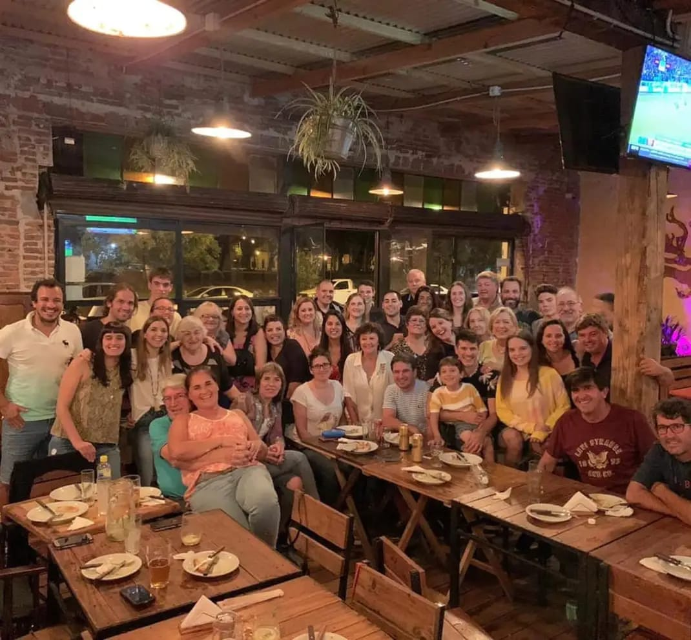
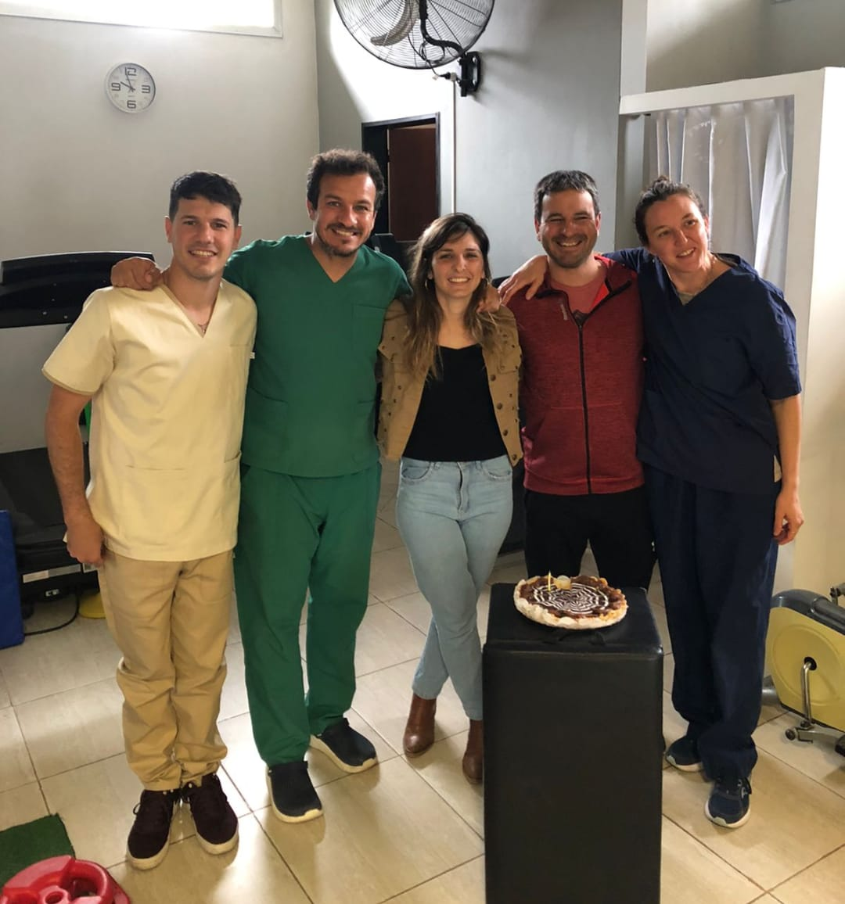
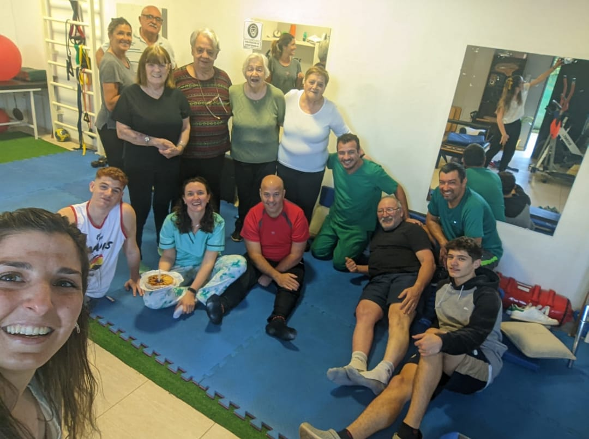
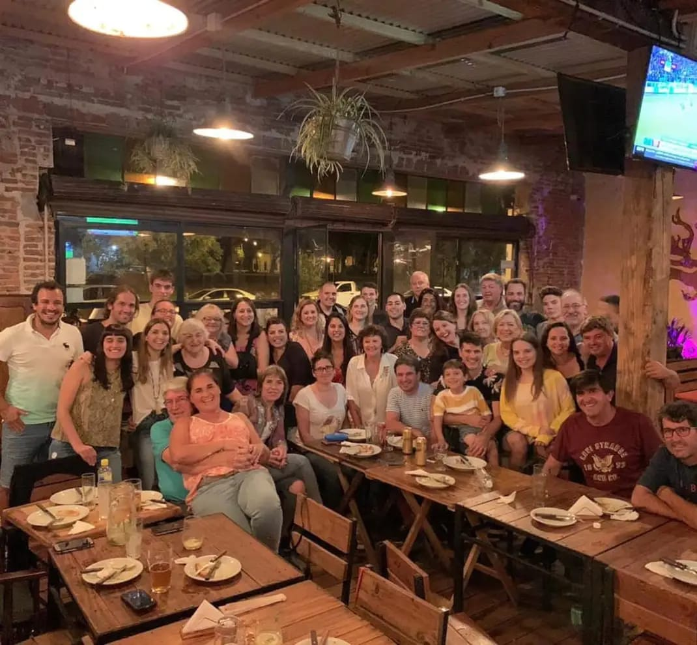
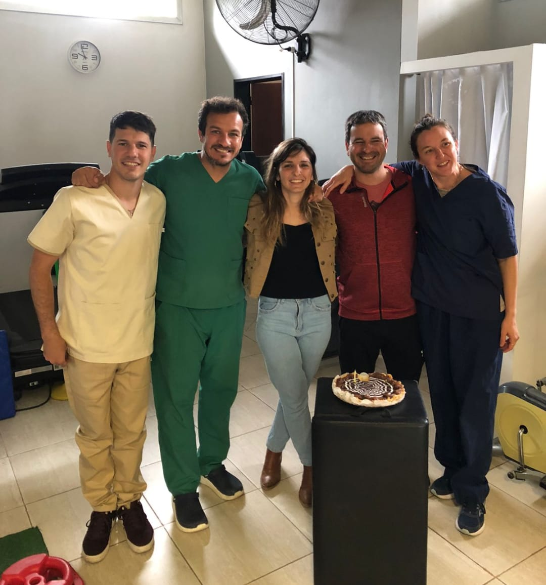
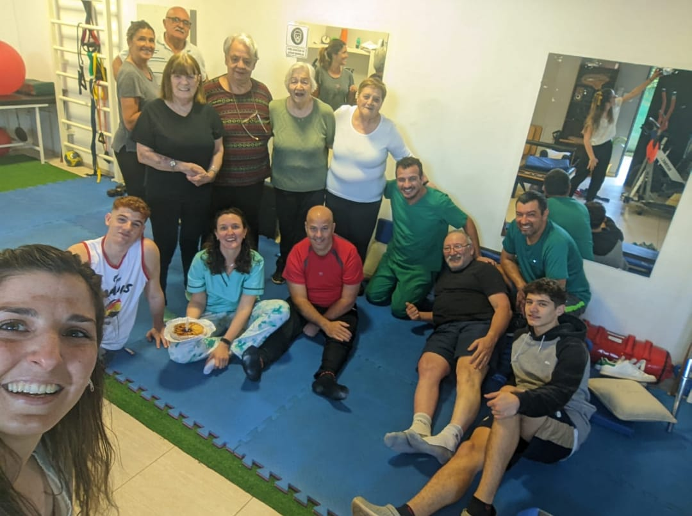

Terapias Manuales
Técnicas especializadas que utilizan las manos para aliviar tensiones musculares, mejorar la movilidad articular y promover la recuperación de lesiones. Estas terapias incluyen masajes, movilizaciones y manipulaciones suaves.
Con una sólida trayectoria en el campo de la kinesiología, en CRF contamos con un equipo multidisciplinario de profesionales y la tecnología necesaria para ofrecerte el mejor cuidado.
Brindamos un servicio integral de rehabilitación y fisioterapia, diseñado para potenciar la performance física de deportistas amateurs, profesionales y entusiastas del entrenamiento. Nuestro equipo está comprometido a ayudarte a aliviar el dolor, acelerar tu recuperación y alcanzar tus metas físicas con la mayor eficacia.
En CRF, cada paciente recibe una atención personalizada que combina experiencia, técnica y un enfoque cálido y humano. Nos dedicamos a acompañarte en cada etapa de tu proceso de recuperación, asegurando que te sientas apoyado en el desarrollo y la superación de tus objetivos de entrenamiento.
Es un centro de rehabilitación integral. Su propuesta garantiza al paciente un tratamiento con enfoque global y personalizado. Nuestro equipo posee una amplia experiencia en el deporte, trabajando con deportistas profesionales de élite, amateur y recreacionales.
Contamos con profesionales altamente capacitados, cuya formación y experiencia garantizan seriedad y confianza. CRF se encuentra bajo la dirección del Lic. Batiepeda Leonardo E., que junto a su equipo se encuentra en constante formación y actualización.
Trabajamos de manera conjunta para brindarle a cada paciente el tratamiento preciso y adecuado a sus necesidades, y así llegar, no sólo a una recuperación segura y lo más rápida posible, sino también a la prevención de futuras lesiones.


Técnicas especializadas que utilizan las manos para aliviar tensiones musculares, mejorar la movilidad articular y promover la recuperación de lesiones. Estas terapias incluyen masajes, movilizaciones y manipulaciones suaves.
Tratamiento enfocado en la recuperación de lesiones óseas, articulares y musculares producidas por traumatismos, como fracturas, esguinces o luxaciones. Se centra en recuperar la función y reducir el dolor.

Programa personalizado para deportistas que buscan recuperarse de lesiones y volver a su nivel de actividad física. Involucra ejercicios específicos para restaurar fuerza, movilidad y prevenir futuras lesiones.
Tratamiento dirigido a personas con afecciones cardíacas o respiratorias, ayudando a mejorar su capacidad física y calidad de vida a través de ejercicios controlados y técnicas respiratorias.
Programa diseñado para mejorar la calidad de vida de personas que han sufrido lesiones o enfermedades del sistema nervioso, como accidentes cerebrovasculares o esclerosis múltiple. Incluye ejercicios que favorecen la movilidad y la coordinación.
Terapia que utiliza botas especiales para estimular el sistema linfático, favoreciendo la eliminación de líquidos y toxinas. Ideal para reducir la inflamación, mejorar la circulación y aliviar problemas como el linfedema.
 





Para consultas, comunícate con nosotros directamente por WhatsApp:
Contactar por WhatsApp